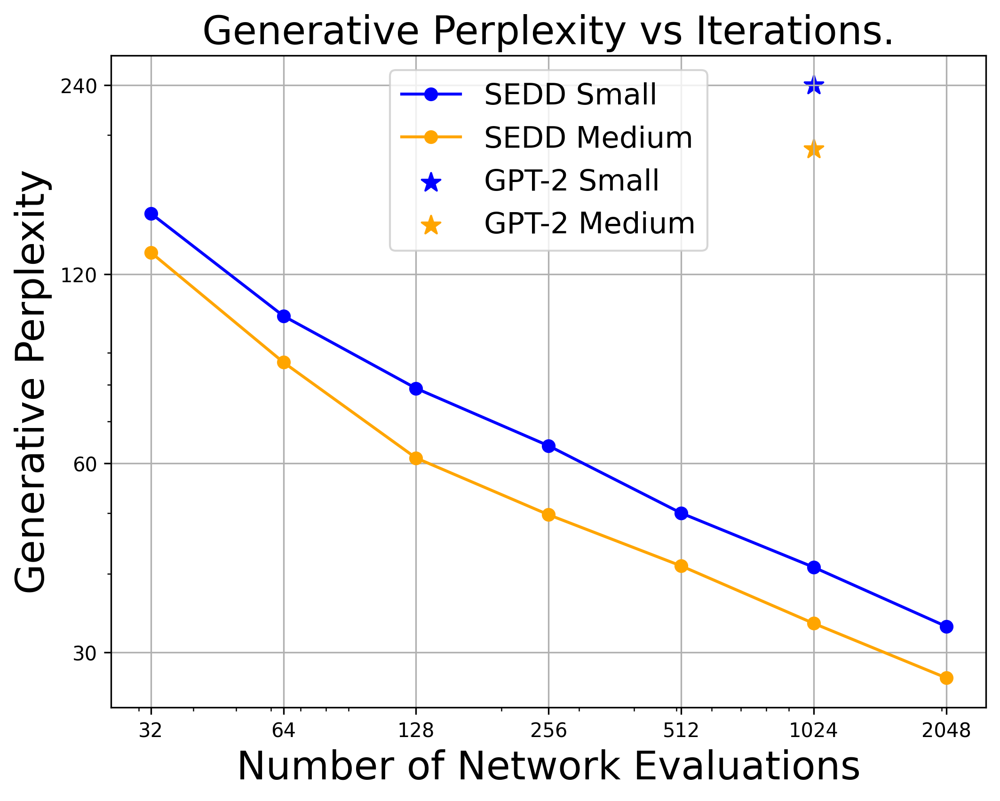
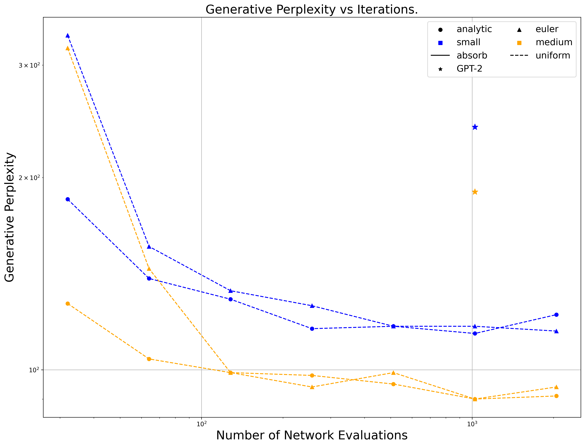

离散扩散建模：估计数据分布的概率比
Discrete Diffusion Modeling by Estimating the Ratios of the Data Distribution
阅读状态、进度与收藏只保存在你的浏览器里。
逐节精读
这部分按论文的章节顺序，用本站自己的话把整篇论文从头讲一遍。读懂某个概念需要的背景知识，会在第一次用到它之前单独讲清楚（青色框）。每个结论都尽量说出“因为什么、所以什么”。论文以 CC BY 4.0 发布，所以本页直接使用了它的两张原图；其余概念用本站画的示意图补上。标“推算”的数字是本站根据论文数据算出来的，标“读图”的数字是从原图上估读的，都不是论文原话。本页按 arXiv v3（2024-06-06）阅读，每节末尾有英文原文的链接。
0 导读：这篇论文解决什么问题
扩散模型在图像、音频上大获成功，靠的是一套很成熟的理论：先往数据里一点点加高斯噪声，再训练一个网络学会“往回走”。往回走需要知道的唯一一样东西，是每个噪声水平下数据分布的 score，也就是对数概率密度的梯度 \(\nabla_x\log p_t(x)\)。学 score 的方法叫 score matching，它稳定、可扩展，还能给出似然。
文本却是一串离散的 token。一个词不能“往某个方向挪一点点”，梯度在这里没有定义，所以这套理论不能直接搬过来。此前的离散扩散模型（以 D3PM 为代表）换了一条路，让网络直接预测干净的数据；把文本嵌入到连续空间再做高斯扩散的路线（Diffusion-LM、PLAID）则需要各种工程技巧。两条路在语言建模上的困惑度都明显不如同等大小的自回归（AR）模型。
这篇论文的想法是：在离散空间里，score 的天然对应物是概率比 \(p_t(y)/p_t(x)\)，即“把当前序列 \(x\) 换成邻居 \(y\)，概率会变成原来的几倍”。反向去噪过程完全由这些比值决定。难点在于怎么学：直接用平方误差回归，网络会给出负数或零，训练发散。作者为此设计了一个新损失 score entropy，它是以 \(-\log\) 为凸函数的 Bregman 散度，天然只接受正值；它有一个可以高效计算的“去噪”版本，而且正好构成负对数似然的上界。用 [MASK] 吸收态做前向过程，SEDD 在 GPT-2 small / medium 规模上，零样本困惑度的上界在 5 个数据集中的 3 个低于 GPT-2；在不调温度的条件下，生成文本的质量（以 GPT-2 large 打分的生成困惑度衡量）好于 GPT-2；它还可以在任意位置给提示做填空。这篇论文获得了 ICML 2024 最佳论文奖。
本页会把这些结果的条件讲清楚：困惑度是上界、GPT-2 的基线数字是作者按另一种协议重算的、生成困惑度后来被发现受到数值精度的影响。最后会讲 RADD 的后续发现：在吸收态下，SEDD 学的概率比等于一个解析的时间因子乘以一个与时间无关的条件概率。这一步把 SEDD 和后来“掩码语言模型式”的扩散 LLM（MDLM、LLaDA）接在了一起。
读完这部分，你应该能回答这几个问题：
- 连续时间马尔可夫链是什么，速率矩阵的每个元素是什么意思？
- 为什么反向过程只需要概率比，概率比在什么意义上是“离散的 score”？
- score entropy 为什么用 \(-\log\)，它比平方误差好在哪里？它的最小值为什么正好在真实比值处？
- 训练目标为什么同时是似然的上界？困惑度前面的“≤”意味着什么？
- 吸收态和均匀态两种加噪方式有什么区别，为什么吸收态更好？
- Tweedie τ-leaping 在“最优”什么，又在哪里仍然有误差？
- “超过 GPT-2”“生成质量好 6–8 倍”这些数字是在什么条件下测出来的，后来又被修正成什么样？
1 引言：自回归统治语言建模，扩散为什么一直追不上
自回归模型把一句话的概率拆成一串条件概率的乘积：先预测第一个词，再在第一个词的基础上预测第二个词，依此类推。它的训练目标就是最大化真实文本的对数似然，评测时也能精确算出每个 token 的概率。
语言模型最常用的指标是困惑度（perplexity，PPL）：先把测试文本每个 token 的负对数概率取平均，再取指数。
它有一个直观的读法：困惑度为 40，意思是模型平均起来的不确定程度，相当于每一步要在 40 个等可能的词里猜一个。困惑度越低越好。注意困惑度是指数尺度：从 41.6 降到 40.6，对应每个 token 的平均负对数似然只降了约 0.024 nats（推算）。
直接按 AR 模型给出的概率原样采样（温度为 1），生成的文本常常会跑题、语无伦次，因为每一步都有一点机会抽到概率很低的词，错误会一路累积。实践中总要做一些修剪，比如把温度调低，或者只在累计概率前 95% 的词里采样（nucleus / top-p 采样）。这类做法统称为分布退火：它让样本更“稳”，代价是样本不再忠实于模型学到的分布，多样性也变低。论文反复强调 SEDD 不需要退火，指的就是这一点。
连续扩散模型的前向过程是逐渐往图像里加高斯噪声，直到变成纯噪声；生成时把这个过程倒过来。可以证明，倒放过程的每一步只需要知道当前噪声水平下的 score \(\nabla_x\log p_t(x)\)：它是一个向量，指向“概率密度上升最快的方向”。只要把 score 学准，就能从噪声一步步走回数据。学 score 的标准方法是去噪 score matching：给干净样本加已知的噪声，让网络去预测“把噪声去掉的方向”，这个目标在期望上等价于直接拟合 score，却不需要知道真实分布。
论文开头先列出了自回归模型的三个痛点：逐个 token 采样很慢；只能从左往右生成，难以控制（比如很难在一段话的中间填空）；而且不做退火时样本质量会明显下降。这些痛点让人想到扩散模型：它可以同时修改所有位置，可以用更少或更多的步数在速度和质量之间权衡。
可是在此之前，扩散模型搬到语言上的效果一直不好。作者概括了三个原因：似然（困惑度）比不过 AR；采样比 AR 还慢；不靠大量退火和经验性的修补，生成不出可比的样本。背后的根本问题是：连续扩散的理论核心是 score matching，而离散空间里没有梯度，score 该怎么定义、怎么学，并没有一个被公认有效的答案。
论文提出的 SEDD（Score Entropy Discrete Diffusion）用“数据分布的概率比”来参数化反向过程，再用新损失 score entropy 学这些比值。作者列出的三条实证贡献是：
- 在核心的语言建模任务上，大幅超过已有的语言扩散模型，并与同等大小的 AR 模型有竞争力，在 GPT-2 的零样本困惑度任务上超过 GPT-2；
- 不退火的无条件生成质量更高，并且可以用步数换质量：以 GPT-2 large 打分的生成困惑度，比同等大小、同样不退火的 GPT-2 好 6–8 倍，或者用少 32 倍的网络调用次数达到同样水平；
- 因为直接建模概率比，SEDD 可以从任意位置给提示，不需要专门训练；在标准提示和填空两种设定下，生成质量与使用 nucleus 采样的 AR 模型相当（用 MAUVE 衡量）。
2 预备知识：离散扩散过程，以及为什么反向过程只需要概率比
2.1 连续时间马尔可夫链：用“速率”描述加噪
普通的（离散时间）马尔可夫链每走一步，按一个转移矩阵从当前状态跳到下一个状态：转移矩阵第 \(x\) 列写着“从 \(x\) 出发，跳到每个状态的概率”，每一列加起来等于 1。
如果把一步的时间缩得越来越短，每一小段时间内跳走的概率也越来越小，和时间长度成正比。这时描述过程的就不再是“概率”，而是“速率”：速率矩阵 \(Q\) 的非对角元 \(Q(y,x)\) 表示“单位时间里从 \(x\) 跳到 \(y\) 的倾向”，在一小段时间 \(\Delta t\) 里，跳过去的概率约等于 \(Q(y,x)\Delta t\)。对角元 \(Q(x,x)\) 是负数，等于这一列其他元素之和的相反数，表示“单位时间里离开 \(x\) 的总倾向”。所以速率矩阵的每一列加起来等于 0：概率只是在状态之间搬来搬去，总量不变。这种在连续时间上运行的马尔可夫链叫连续时间马尔可夫链（CTMC）。
论文考虑一个有 \(N\) 个状态的有限集合，概率分布就是一个长度为 \(N\)、各元素非负且和为 1 的向量 \(p_t\)。离散扩散过程让这个向量按一个线性常微分方程演化：
其中 \(Q_t\) 就是上面说的速率矩阵（论文叫扩散矩阵）：非对角元非负，每列和为 0。通常取 \(Q_t=\sigma(t)\,Q\)，即一个固定的矩阵 \(Q\) 乘上随时间变化的噪声强度 \(\sigma(t)\)，这样 \(p_t\) 会随时间逐渐趋向一个简单的极限分布 \(p_{\text{base}}\)。要模拟这个过程，可以取很小的步长 \(\Delta t\)，按下面的概率随机跳转：
这里 \(\delta_{xy}\) 在 \(x=y\) 时为 1、否则为 0。请注意记号：本文的 \(Q_t(y,x)\) 是“从 \(x\) 到 \(y\)”，行是目的地、列是出发地，这和很多教科书正好相反，后面所有公式都沿用这个约定。
走一个三状态的例子。设一个“词表”里只有两个词：猫、狗，再加一个特殊的掩码状态 [M]。前向过程是：每个词以速率 \(\sigma(t)\) 变成 [M]，[M] 永远不再变化。按“行是目的地、列是出发地”，排列顺序取（猫，狗，[M]），速率矩阵是：
第一列是“从猫出发”：留在猫的倾向是 \(-1\)（负的对角元表示离开），跳到 [M] 的倾向是 \(+1\)，两者加起来为 0。第三列全是 0，因为 [M] 不往任何地方去。如果 \(\sigma=1\)、步长 \(\Delta t=0.1\)，那么一个“猫”在这一步里大约以 0.1 的概率变成 [M]，以 0.9 的概率保持不变（精确值是 \(e^{-0.1}\approx0.905\)，差别就是上式里的 \(O(\Delta t^2)\)）。
因为 \(Q\) 结构简单，可以直接写出 \(p_t\)。定义累计噪声 \(\bar\sigma(t)=\int_0^t\sigma(s)\,\mathrm{d}s\)。设开始时猫占 70%、狗占 30%，那么：
取 \(\bar\sigma=\ln 2\approx0.693\) 这个时刻，\(e^{-\bar\sigma}=0.5\)，于是 \(p_t=(0.35,\ 0.15,\ 0.50)\)：一半的概率质量已经变成了 [M]。后面我们会反复用到这组数字。
2.2 时间反演：反向速率 = 前向速率 × 概率比
这个过程有一个经典的时间反演：倒着放的过程仍然是一条连续时间马尔可夫链，它的速率矩阵 \(\overline{Q}_t\) 是：
这个公式可以用“概率流量”来理解。在前向过程里，一小段时间内从 \(y\) 流到 \(x\) 的概率质量是 \(p_t(y)\,Q_t(x,y)\,\Delta t\)。把电影倒着放，同样多的质量要从 \(x\) 流回 \(y\)。反向过程的速率是“单位时间里，位于 \(x\) 的每一份质量有多大倾向流到 \(y\)”，所以要用流量除以 \(x\) 处现有的质量 \(p_t(x)\)：
两边同时除以 \(p_t(x)\) 就得到上面的反向速率。注意，等式里唯一不知道的东西就是概率比 \(p_t(y)/p_t(x)\)，前向速率 \(Q_t\) 是我们自己设计的。所以，只要学会了这些概率比，就掌握了整个反向过程。
回到三状态例子，在 \(\bar\sigma=\ln2\) 时，从 [M] 出发的反向速率是：到猫 \(=\frac{0.35}{0.50}\cdot\sigma(t)=0.7\,\sigma(t)\)，到狗 \(=0.3\,\sigma(t)\)。反过来，从猫出发的反向速率是 \(\frac{p_t([\mathrm{M}])}{p_t(\text{猫})}\cdot Q_t(\text{猫},[\mathrm{M}])\)，而 \(Q_t(\text{猫},[\mathrm{M}])\) 是“从 [M] 跳到猫”的前向速率，等于 0，所以在反向过程里，一个已经是“猫”的位置永远不会再变。这说明了另一个重要事实：只有前向过程中能一步互相到达的状态对，比值才是有用的，其余比值乘的是 0，根本不需要学。
这些比值 \(p_t(y)/p_t(x)\) 合在一起，被 Meng 等人（2022）称为 concrete score。它为什么配得上“score”这个名字？论文在脚注里给了一个解释：在离散结构上，可以把一对状态 \(x\neq y\) 之间的“梯度”定义为函数值之差 \(\nabla f(xy)=f(y)-f(x)\)，于是连续 score \(\nabla\log p=\nabla p/p\) 的离散对应物就是：
它和概率比只差一个常数 1。连续情形里，score 告诉你“沿哪个方向走，概率上升得最快”；离散情形里，concrete score 告诉你“跳到每个邻居，概率会变成原来的几倍”。
2.3 在 SEDD 之前，人们怎么学这些比值
连续扩散在理论上已经统一到 score matching 上了，离散扩散却有好几套互相竞争的方法，实验结果也参差不齐。论文把它们分成三类。
均值预测（mean prediction）。D3PM（Austin 等，2021）和 Campbell 等人（2022）的连续时间框架没有直接学比值，而是学“反向去噪分布” \(p_{0|t}\)，也就是“看到噪声版本，猜原来的干净数据是什么”。这其实绕了一个弯间接恢复了比值（论文第 4 节的定理会说明二者的关系）。作者认为这条路有两个缺点：一是 \(p_{0|t}\) 是一个概率分布，学一个分布比学一组一般的数值更难；二是这种目标在连续时间下会失效，只能做近似。结果是这一框架在语言上普遍表现不佳。
比率匹配（ratio matching）。Hyvärinen（2007）提出、Sun 等人（2023）扩展的方法，用最大似然学习每个维度的边缘分布。它偏离了标准的 score matching，需要专门的、昂贵的网络结构，效果往往还不如均值预测。
concrete score matching（CSM）。Meng 等人（2022）把连续 score matching 里的 Fisher 散度直接推广过来，用平方误差回归比值：
问题在于，真实的比值一定是正数，而平方误差对“猜成负数”或“猜成 0”惩罚得不够重。网络一旦把某个比值压到 0 附近，它就再也很难被拉回来（3.1 节会算给你看）。作者在附录 D.1 做了对照：在 GPT-2 规模的实验里只把 score entropy 换成对应的平方误差（其余设置不变），训练效果很差，似然损失高出 3–4 倍，对应的困惑度高出约 10,000 倍。
英文原文 §2 ↗ · 相关：前向过程三族（旧版拆解页）
3 Score entropy：为“正的比值”量身定做的损失
3.1 定义：一个以 \(-\log\) 为凸函数的 Bregman 散度
论文把网络输出记为 \(s_{\theta}(x)\)，它是一个向量，第 \(y\) 个分量 \(s_{\theta}(x)_y\) 用来近似 \(p(y)/p(x)\)。score entropy 的定义是：
其中 \(w_{xy}\ge0\) 是权重，和扩散过程结合时才会用到；\(K\) 只是一个让损失最小值恰好为 0 的常数项，与网络参数无关。
取一个严格凸函数 \(F\)。在点 \(a\) 处画它的切线，再看另一点 \(s\) 处“曲线比切线高出多少”，这个高度差就是 Bregman 散度：
因为凸函数总在切线上方，所以 \(D_F\ge0\)；又因为是严格凸，只有 \(s=a\) 时才等于 0。不同的 \(F\) 给出不同的“距离”：取 \(F(s)=s^2\) 得到平方误差 \((s-a)^2\)；取 \(F(s)=s\log s\) 得到 KL 散度那一类。所以平方误差本身就是 Bregman 散度的一个特例，CSM 用的就是它。
SEDD 选的是 \(F(s)=-\log s\)，它只在 \(s\gt 0\) 上有定义。代入上式：
把 score entropy 里括号中的那一项（记真实比值为 \(a\)，网络输出为 \(s\)）展开整理，正好是 \(a\) 倍的这个散度，也可以写成一个“未归一化的 KL 散度”：
最右边的形式解释了名字里的 “entropy”：其中 \(-a\log s\) 就是交叉熵那一项；如果 \(a\) 和 \(s\) 都是加起来为 1 的概率，多出来的 \(-a+s\) 求和后会抵消，整个式子就退化成普通的 KL 散度。score entropy 可以看成把交叉熵推广到“不必归一化的正数”上。
用数字验证一遍最小值。设真实比值 \(a=2\)，那么常数 \(K(2)=2(\ln2-1)\approx-0.614\)。把单项损失 \(f(s)=s-2\log s+K(2)\) 在几个点上算出来（推算）：
| 网络输出 \(s\) | score entropy \(f(s)\) | 平方误差 \(\tfrac12(s-2)^2\) | SE 对 \(s\) 的梯度 \(1-2/s\) | 平方误差的梯度 \(s-2\) |
|---|---|---|---|---|
| 0.1 | 4.09 | 1.81 | −19 | −1.9 |
| 1 | 0.386 | 0.5 | −1 | −1 |
| 2 | 0 | 0 | 0 | 0 |
| 4 | 0.614 | 2 | 0.5 | 2 |
| 20 | 13.4 | 162 | 0.9 | 18 |
对 \(f\) 求导，\(f'(s)=1-a/s\)，令它为 0 得 \(s=a\)，而且 \(f''(s)=a/s^2\gt0\)，所以这是唯一的最小值，最小值为 0。表里能看出两种损失的性格完全不同：当网络把比值猜得太小（\(s=0.1\)），score entropy 的梯度是平方误差的 10 倍，强力地把它往回推；当猜得太大（\(s=20\)），score entropy 只温和地以 0.9 的梯度往回拉，平方误差却给出 18。也就是说，score entropy 在意的是相对误差（猜成一半和猜成两倍差不多一样糟），这正适合“比值”这种乘性的量。
3.2 五条性质中的前三条：一致、梯度好、可以不知道真实分布
第一，它能学到真实比值。论文的命题 3.2 说：如果真实分布 \(p\) 处处为正、权重 \(w_{xy}\gt0\)，那么在样本和模型容量都趋于无穷时，让 score entropy 最小的参数满足 \(s_{\theta^*}(x)_y=p(y)/p(x)\)，并且此时损失为 0。证明就是上面那个求导：在样本足够多时，损失变成对所有 \((x,y)\) 的加权和，每一项都单独在 \(s=p(y)/p(x)\) 处取最小值。
第二，它把有问题的梯度重新缩放了。当所有权重为 1 时，score entropy 对 \(s\) 的梯度，恰好等于平方误差的梯度再除以 \(s\)：
当 \(s\) 很小时，这个 \(1/s\) 把梯度放得很大，形成一道天然的 log-barrier，把 \(s\) 挡在正数区域。本站再补充一个实际训练中更关键的角度：SEDD 的网络实际输出的是 \(\log s\)，再取指数保证为正（3.4 节）。记 \(u=\log s\)，两种损失对 \(u\) 的梯度分别是：
在平方误差下，一旦网络把某个比值压到接近 0，梯度里多出来的那个因子 \(s\) 让梯度也接近 0，这个比值就“卡死”了；而当 \(s\) 很大时，梯度又按 \(s^2\) 爆炸。score entropy 的梯度 \(s-a\) 在两头都规规矩矩。这和附录 D.1 里平方误差版本训练失败的现象是吻合的（这段关于 \(u\) 的分析是本站的补充推导，不是论文原文）。
第三，可以不知道真实分布。损失里含有未知的 \(p(y)/p(x)\)，没法直接算。和连续 score matching 一样，作者给了两种绕开的办法。第一种叫隐式 score entropy（命题 3.3），它等于原损失加一个常数：
问题是第二项要在所有邻居 \(y\) 上分别跑一次网络，才能拿到 \(s_{\theta}(y)_x\)。在高维情形下这算不起，只能随机抽几个 \(y\)，又会引入很大的方差（类似 sliced score matching 里 Hutchinson 迹估计带来的方差）。所以隐式版本在大规模任务上不实用。
第二种是去噪 score entropy（DSE，定理 3.4），它借用了去噪 score matching 的思路。假设我们看到的分布 \(p\) 是由干净分布 \(p_0\) 经过一个已知的“加噪核” \(p(\cdot\mid x_0)\) 得到的，即 \(p(x)=\sum_{x_0}p(x\mid x_0)\,p_0(x_0)\)。那么下面这个损失与原损失只差一个与参数无关的常数：
未知的边缘比值被换成了已知的“转移核之比” \(p(y\mid x_0)/p(x\mid x_0)\)。为什么可以这样换？关键在于未知的比值只以一次方乘在 \(\log s\) 前面，而它恰好等于这些转移核之比在“看到 \(x\) 之后对 \(x_0\) 的后验”下的平均：
所以用一个个带噪的目标去训练，期望上和用真实比值训练完全一样。这个损失每个样本只需要跑一次网络（一次前向就给出所有 \(s_{\theta}(x)_y\)），而扩散过程中每个时刻的 \(p_t\) 恰好都是 \(p_0\) 经过已知转移核得到的，所以它特别适合离散扩散。
3.3 第四条性质：训练目标就是似然的上界
扩散模型生成一个样本要经过很多步随机跳转，最后得到 \(x_0\) 的概率，等于“所有能走到 \(x_0\) 的路径的概率之和”，这个和算不出来。常用的办法和变分自编码器一样：找一个算得出来、而且一定不小于 \(-\log p_{\theta}(x_0)\) 的量（证据下界 ELBO 取负号），用它来训练，也用它来报告。报告出来的困惑度因此是一个上界，表格里写成“≤”：模型真实的困惑度只会更低，不会更高。自回归模型则能精确算出似然，所以它的困惑度是精确值。
先把学到的比值代回反向过程（定义 3.5）：把公式 (3) 里真实的比值换成网络输出，得到参数化的反向速率 \(\overline{Q}^{\theta}_t(y,x)=s_{\theta}(x,t)_y\,Q_t(x,y)\)，再从极限分布 \(p_{\text{base}}\) 出发倒着跑，就定义了模型分布 \(p^{\theta}_0\)。定理 3.6 说：
这个式子看着长，拆开读其实就是：在每个时刻 \(t\)，把干净样本 \(x_0\) 加噪成 \(x_t\)，对 \(x_t\) 的每个邻居 \(y\) 算一项去噪 score entropy，权重取前向速率 \(Q_t(x_t,y)\)，再沿时间积分。论文把它叫作扩散加权的去噪 score entropy（DWDSE）。后面那个 KL 项衡量“加噪到最后的分布”和极限分布有多接近；作者选的噪声调度让它小到可以忽略。
证明的思路（附录 A）分两步。第一步用数据处理不等式：只看终点的 KL 不会超过看整条路径的 KL，即 \(-\log p^{\theta}_0(x_0)=D_{\mathrm{KL}}(\delta_{x_0}\,\|\,p^{\theta}_0)\le D_{\mathrm{KL}}(\mathbb{P}_{x_0}\,\|\,\mathbb{P}^{\theta})\)，这里 \(\mathbb{P}\) 表示整条去噪路径的分布。第二步用 Dynkin 公式（它在跳跃过程里的地位，相当于连续扩散里的 Girsanov 定理）把路径 KL 显式算出来，整理后就是 DWDSE 加上先验项。论文还指出，DWDSE 可以从 Benton 等人（2022）的一般框架推出，它的隐式版本则和 Campbell 等人（2022）提出的似然损失一致。
这条性质的分量很重：同一个量既是训练损失，又是似然上界。于是 SEDD 可以直接用困惑度和自回归模型比较，而这是语言建模最核心的指标。实际评测时，积分用 1000 个随机时间点做蒙特卡洛估计（附录 C.6）；训练时每个样本只随机抽一个时间点。
3.4 第五条性质：落到 GPT-2 规模的序列上
前面的推导针对的是一般的有限状态空间。文本是长度为 \(d\) 的 token 序列，每个位置有 \(n\) 种取值，整个状态空间有 \(n^d\) 个状态。GPT-2 的词表 \(n=50257\)，序列长 \(d=1024\)，一个一般的速率矩阵根本写不下。作者的做法是让每个 token 独立地加噪：序列的速率矩阵只在“恰好改了一个位置”的两条序列之间非零，等于 token 级的速率：
因为损失按 \(Q_t(x,y)\) 加权，只有汉明距离为 1 的邻居（只差一个位置的序列）才有非零权重。所以网络只需输出一张 \(d\times n\) 的表：第 \(i\) 行第 \(\hat{x}\) 列近似“把第 \(i\) 个位置换成 \(\hat{x}\)”之后的概率比。这就是一个普通的序列到序列网络，形状和语言模型输出 logits 完全一样：
前向转移概率也随之按位置分解，每个位置只要算 token 级的转移：
这里取 \(Q^{\text{tok}}_t=\sigma(t)Q^{\text{tok}}\)，所以只要知道累计噪声 \(\bar\sigma(t)\) 就能写出转移，不必做数值积分。但对一般的 \(Q^{\text{tok}}\)，这一步仍然做不到：\(50257\times50257\) 的矩阵约有 25 亿个元素（推算），论文说光是存它就要约 20 GB 显存，而且读起来极慢；算 \(\exp(\bar\sigma Q^{\text{tok}})\) 的列又要做矩阵乘矩阵。于是作者沿用前人的选择，只用两种有闭式解的结构：
均匀态（uniform）对应一张全连通图：任何词都可以以同样的速率跳到任何别的词，极限分布是整个词表上的均匀分布（实际实现里矩阵整体缩小了 \(N\) 倍）。吸收态（absorb）多加一个 [MASK] 状态，任何词都只能跳到 [MASK]，[MASK] 不再动，极限分布是“全是 [MASK]”，这和 BERT 的掩码语言模型很像，我们 2.1 节的三状态例子就是它的缩小版。两者每个位置的转移都有闭式（推算，与官方代码一致）：
噪声调度。作者试了两种：几何调度（累计噪声在 \(10^{-5}\) 到 20 之间按几何级数变化）和 log-linear 调度。后者的设计目标是让“被改动的 token 数”大约等于 \(t\cdot d\)，按官方代码 noise_lib.py，它的累计噪声是：
也就是说，在吸收态下，时刻 \(t\) 每个 token 被掩的概率恰好是 \((1-\epsilon)t\)，随时间线性增长（\(\epsilon=10^{-3}\) 只是为了数值稳定）。log-linear 调度改善了吸收态的困惑度。作者说明他们没有系统地探索噪声调度或其他损失加权。
网络结构。主干是 DiT（diffusion transformer）：一个标准的只有编码器的 Transformer（注意力是双向的，没有因果掩码），通过 adaLN-zero 把噪声水平注入每一层（时间条件网络的隐藏维度为 128），位置编码改用旋转位置编码（RoPE）。和惯例一样，网络的时间输入是累计噪声 \(\bar\sigma\) 而不是 \(t\)。网络输出先取指数，保证比值为正。small 和 medium 两档的层数、宽度、头数与 GPT-2 small / medium 相同（官方配置：12 层、768 维、12 头；24 层、1024 维、16 头），序列长 1024。因为多了时间条件，参数比同样形状的 Transformer 多约 5–10%；而且 SEDD 的输入嵌入和输出矩阵是两套独立的参数。附录 C.2 给出的规模是 SEDD small 约 9,000 万、SEDD medium 约 3.2 亿非嵌入参数，对应的 GPT-2 small / medium 为 8,600 万 / 3.04 亿。
| 位置 | 当前 token | 这一行装的是 | 示意数值（取 \(e^{-\bar\sigma}=2/3\)） |
|---|---|---|---|
| 2 | [M] | 把 [M] 换成每个词后的概率比 | cat 0.62 · dog 0.41 · man 0.20 · … |
| 5 | [M] | 同上 | the 1.40 · a 0.32 · his 0.12 · … |
| 1、3、4、6 | 原词 | 不需要：吸收态下原词不会再被改，对应的反向速率为 0 | （输出被忽略） |
训练一步做什么。把上面这些拼起来，就是论文的算法 1。对吸收态，这一步可以写得非常具体（以下按官方代码 graph_lib.py 与 losses.py 整理）：
第 ⑤ 步为什么只在 [M] 位置有损失？因为一个未被掩的位置 \(x^i=v\)，它的邻居 \(y\)（把 \(v\) 换成别的词）到它的前向速率 \(Q^{\text{tok}}(v,\hat{x})\) 是 0（别的词只会变成 [M]，不会变成 \(v\)），所以权重为 0。对被掩的位置 \(i\)，邻居是“把 [M] 换成 \(\hat{x}\)”，前向速率是 \(\sigma(t)\)；转移核之比只有在 \(\hat{x}\) 正好是原词 \(x^i_0\) 时才非零，等于 \(e^{-\bar\sigma}/(1-e^{-\bar\sigma})\)。把这些代入 DWDSE，被掩位置 \(i\) 的损失是：
第一项把所有比值往下压，第二项把原词那一格往上拉，两股力在“比值 = 时间因子 × 原词的条件概率”处平衡。因为结构这么简单，作者说 SEDD 一次训练迭代的速度和显存都与普通自回归训练差不多。
- 附录 C.1 把 log-linear 调度印成了 \(\bar\sigma(t)=-\log(1-(1-\epsilon t))\)，括号位置有误；官方代码是
-log1p(-(1 - eps) * t)，即本页上面的写法。 - 附录 C.2 只说“按 \(e^{\bar\sigma}-1\) 缩放对吸收态有帮助”，没说方向。官方
model/transformer.py在对数空间里减去 \(\log(e^{\bar\sigma}-1)\) 和 \(\log n\)，也就是把输出除以 \((e^{\bar\sigma}-1)\) 再除以词表大小，并断言只用于吸收态；当前 token 自己那一格被固定为比值 1。这个“缩放技巧”后来被 RADD 解释清楚了。 - 附录 C.3 写预热 2000 步，仓库默认配置
configs/config.yaml写的是 2500 步。复现以代码为准。
4 采样：怎样用学到的比值把噪声变回文本
4.1 从 Euler 到 τ-leaping，再到 Tweedie τ-leaping
Euler 法太慢。最直接的办法是像 2.1 节那样，用很小的步长按公式 (2) 跳。问题是，序列的速率矩阵只连接“只差一个位置”的序列，在一小段时间里同时跳两个位置的概率是 \(\Delta t^2\) 量级，所以严格的 Euler 法每一步最多改一个位置，生成 1024 个 token 至少要 1024 步。
τ-leaping。化学反应模拟里有一个常用的近似（Gillespie，2001）：在一个时间步里，让每个位置同时、独立地各做一次 Euler 跳转。对第 \(i\) 个位置，下一步取值的概率是：
这样一步就可以改很多个位置。但这种做法没有利用“\(s_{\theta}\) 近似的是真实概率比”这一信息。
Tweedie τ-leaping。作者注意到，如果知道全部的概率比，就能精确地去噪。这是离散版的 Tweedie 定理（定理 4.1）：当 \(p_t\) 按 \(\mathrm{d}p_t=Qp_t\) 演化时，
它的意思用 Bayes 公式就能看懂：\(p_{0|t}(x_0\mid x_t)=p_{t|0}(x_t\mid x_0)\,p_0(x_0)/p_t(x_t)\)。其中 \(p_0=\exp(-tQ)\,p_t\) 是把扩散方程倒着解回去；整体除以 \(p_t(x_t)\) 之后，需要的只是比值向量 \(p_t(i)/p_t(x_t)\)；最后乘上已知的前向转移 \(p_{t|0}(x_t\mid x_0)\)。
实际上我们只知道汉明距离为 1 的比值，不知道全部。作者于是把这个思路用在“从 \(t\) 退到 \(t-\Delta t\) 这一小步”上，并且逐个 token 地做：把 τ-leaping 里第 \(i\) 个位置的转移概率换成
定理 4.2 说：在比值学准的前提下，这个更新规则在所有“各位置独立、同时更新”的策略（即所有 τ-leaping 类策略）中，与真实反向一步的 KL 散度最小。附录 C.7 报告，Tweedie 版本的生成困惑度通常比 Euler 版本好 1–4 个点。
吸收态下它长什么样。把吸收态的矩阵代进去（本站推导，与官方代码 sampling.py 的 AnalyticPredictor 一致）：比值准确时，一个仍是 [M] 的位置在这一步里被“揭开”成词 \(\hat{x}\) 的概率是
其余概率留给“继续保持 [M]”。在 log-linear 调度下，第一个因子化简为 \(\Delta t/t\)（推算）。如果把时间均匀切成 \(N\) 步，那么在还剩 \(k\) 步的时候，每个仍被掩的位置以 \(1/k\) 的概率揭开：第一步揭开 \(1/N\)，最后一步揭开剩下的全部。结果是每个位置在哪一步被揭开是均匀随机的，平均每步揭开 \(d/N\) 个 token：长 1024 的序列用 32 步，每步约 32 个；用 2048 步，每步约 0.5 个（推算）。RADD 后来证明，在吸收态 + log-linear 下，Euler 版本给出的也正是这个规则，两者等价。官方采样代码在最后还会额外做一次“去噪”，把还没揭开的位置全部填上。
4.2 任意位置的提示与填空
学比值还有一个意外的好处：条件生成不需要专门训练。设 \(\overline{\Omega}\) 是已经给定的位置（提示），取值为 \(\mathbf{y}\)；\(\Omega\) 是要生成的位置。我们需要的是条件分布 \(p_t(\mathbf{x}^{\Omega}\mid\mathbf{x}^{\overline{\Omega}}=\mathbf{y})\) 的比值。由 Bayes 公式，条件概率等于联合概率除以 \(p_t(\mathbf{x}^{\overline{\Omega}}=\mathbf{y})\)，而这个分母在比值里上下抵消：
这里 \(\oplus_{\Omega}\) 表示把两部分按位置拼回一条完整序列。也就是说，条件 score 和无条件 score 完全相同。所以采样时只需要把提示位置固定住，每一步只更新 \(\Omega\) 里的位置（论文算法 3）。提示可以放在开头（相当于普通的续写，\(\overline{\Omega}=\{1,\dots,c\}\)），也可以放在结尾、中间，甚至分散成几段，论文表 4 展示了这几种情况的样本。
5 实验：困惑度、生成质量与填空
5.1 实验设置
作者构造了两个模型：SEDD Absorb 和 SEDD Uniform，分别用吸收态和均匀态的转移矩阵。训练时把句子拼接打包成等长的块（语言模型的常规做法）；只有 text8 实验为了和前人一致，随机截取连续子串（作者说这对结果影响不大）。网络的层数、宽度、头数都和对比的前人工作对齐，分词器和数据划分也相同，以免分词差异带来伪影。
训练超参见附录 C.3：批大小 512，学习率 \(3\times10^{-4}\)，梯度裁剪到范数 1，线性预热，EMA 0.9999；硬件是 8 张 A100 80GB 或 16 张 A100 40GB 的节点，medium 模型放不下时用梯度累积。作者说明没有做任何超参或结构搜索（附录 C.4），选择多半出于方便，比如直接沿用 DiT 的结构和常见的学习率。论文本身没有写训练了多少步；RADD 论文的表注说，SEDD 和 RADD 的模型都训练了 400K 步。按批大小 512、序列长 1024 推算，400K 步约 2,100 亿个 token；但 RADD 附录对自己同配置的训练给出的是约 1,050 亿 token，两者对不上，本站无法确认哪一个准确。无论哪种算法，都远超 OpenWebText 的规模（RADD 说约 90 亿 token），也就是数据被反复看了很多遍。
5.2 似然：text8、One Billion Words 与 GPT-2 零样本任务
text8（字符级，小模型）。网络超参与数据划分照搬 D3PM，只和规模相近的方法比较，指标是每字符比特数（BPC，越低越好）。SEDD Absorb ≤ 1.39、SEDD Uniform ≤ 1.47；D3PM Absorb ≤ 1.45、D3PM Uniform ≤ 1.61；其他非自回归方法里 BFN ≤ 1.41、MAC ≤ 1.40、多项式扩散 ≤ 1.72。比 SEDD 好的只有自回归 Transformer 和以自回归模型为骨干的离散流，两者都是 1.23；另一个以自回归为骨干的 AR Argmax Flow 是 1.39，与 SEDD 持平。论文据此说 SEDD 在非自回归方法中最好。
One Billion Words（中等规模，词级）。分词、训练和模型规模都按 He 等人（2022，DiffusionBERT）的设定，所有模型约为 GPT-2 small 大小，扩散基线的数字取自该文。作者另外按同样设定训练了一个标准的自回归 Transformer 作参照：
| 方法 | 测试困惑度 | 说明 |
|---|---|---|
| 自回归 Transformer（作者训练） | 31.98 | 精确值 |
| SEDD Absorb | ≤ 32.79 | 上界 |
| SEDD Uniform | ≤ 40.25 | 上界 |
| DiffusionBERT | ≤ 63.78 | 取自 He 等人 |
| D3PM Absorb | ≤ 77.50 | 取自 He 等人 |
| Diffusion-LM | ≤ 118.62 | 取自 He 等人 |
| BERT-Mouth | ≤ 142.89 | 取自 He 等人 |
SEDD Absorb 比其他扩散模型的困惑度低 49%–72%（推算；论文说 50%–75%），和自回归模型只差 0.81，相当于每个 token 的负对数似然差约 0.025 nats（推算）。因为扩散这边报告的是上界，作者认为两者很可能实际持平。这是全文里唯一一个与“同数据、同规模、同设定训练的自回归模型”直接比较困惑度的实验，结果是自回归仍略好。
GPT-2 零样本任务。这是全文的主实验。作者在 OpenWebText 上训练（GPT-2 原本的训练集 WebText 没有公开，OpenWebText 是社区复刻版），在 GPT-2 论文里所有报告困惑度的零样本数据集上测试：LAMBADA、WikiText2、PTB、WikiText103、One Billion Words（1BW）。GPT-2 的基线数字是作者重算的：他们“无条件地”评测，即把测试文本切成独立的块，不使用滑动窗口给每块补上前文，所以数字比 GPT-2 论文里报告的要高。唯一的例外是 1BW，作者说公开实现在这个数据集上表现异常，所以没有重算。对照组 PLAID（当时最强的连续扩散语言模型）和 D3PM 由作者用相同结构、相同训练设置重新训练，只做了 small 规模。
| 规模 | 模型 | LAMBADA | WikiText2 | PTB | WikiText103 | 1BW |
|---|---|---|---|---|---|---|
| small | GPT-2（重算） | 45.04 | 42.43 | 138.43 | 41.60 | 75.20 |
| SEDD Absorb | ≤ 50.92 | ≤ 41.84 | ≤ 114.24 | ≤ 40.62 | ≤ 79.29 | |
| SEDD Uniform | ≤ 65.40 | ≤ 50.27 | ≤ 140.12 | ≤ 49.60 | ≤ 101.37 | |
| D3PM（重训） | ≤ 93.47 | ≤ 77.28 | ≤ 200.82 | ≤ 75.16 | ≤ 138.92 | |
| PLAID（重训） | ≤ 57.28 | ≤ 51.80 | ≤ 142.60 | ≤ 50.86 | ≤ 91.12 | |
| medium | GPT-2（重算） | 35.66 | 31.80 | 123.14 | 31.39 | 55.72 |
| SEDD Absorb | ≤ 42.77 | ≤ 31.04 | ≤ 87.12 | ≤ 29.98 | ≤ 61.19 | |
| SEDD Uniform | ≤ 51.28 | ≤ 38.93 | ≤ 102.28 | ≤ 36.81 | ≤ 79.12 |
表中数字来自原文表 1（粗体为同规模最好）。可以读出三件事。第一，吸收态全面好于均匀态：small 规模下，Uniform 的困惑度比 Absorb 高 20%–28%（推算）。第二，SEDD Absorb 比重新训练的 D3PM 低约 43%–46%，比 PLAID 低 11%–20%（推算）。第三，和 GPT-2 比，两个规模下都是在 WikiText2、PTB、WikiText103 三个数据集上更低，在 LAMBADA 和 1BW 上更高。作者说，据他们所知，这是非自回归语言模型第一次在困惑度上追平一个现代的、规模合理的知名自回归模型。
- 摘要说 SEDD 比已有的语言扩散范式“困惑度降低 25%–75%”。这个范围对较弱的基线（D3PM、Diffusion-LM 等）成立；对当时最强的连续扩散模型 PLAID（作者重训），降幅只有 11%–20%（推算）。
- GPT-2 论文自己报告的 small（117M）零样本困惑度，WikiText103 是 37.50、LAMBADA 是 35.13，比这里重算的 41.60、45.04 低不少。按 SEDD 的说法，区别在评测协议：原始设定用滑动窗口让每段文本带着前文评测，SEDD 则把每块文本单独评测。表里 SEDD 和 GPT-2 用的是同一种“无上下文”协议，所以这一比较是公平的；但 1BW 一列的 GPT-2 数字（75.20 / 55.72）与 GPT-2 论文表 3 完全相同，是直接沿用的原协议数字，和 SEDD 那一列的协议并不一致。
5.3 生成：无条件生成与条件生成
生成困惑度（generative perplexity）的做法是：让模型无条件地生成一批样本，再用一个更大的、独立的语言模型（这里是 GPT-2 large）去算这些样本的困惑度。打分模型觉得越“通顺”，数字越低。这个指标简单，但很容易被“刷”：只要把采样温度调低，样本就会变得保守、重复，打分模型给的困惑度会大幅下降，而多样性同时变差。所以单看生成困惑度不够，必须同时报告样本的多样性，常用的是 unigram 熵（样本里词频分布的熵）。
MAUVE 比较的是“模型生成的文本”和“真实文本”在一个大模型特征空间里的分布有多接近，同时考虑质量和多样性，数值在 0 到 1 之间，越高越好。它主要用于条件生成（给定开头续写）的评测。
无条件生成。大多数文本指标是为条件生成设计的，所以作者用生成困惑度来衡量无条件生成，并且为了避免被退火“刷分”，SEDD 和 GPT-2 都按模型的原始分布采样，不调温度、不做 top-p。每个模型生成 1000 个长 1024 的样本（附录 C.7）。SEDD 用 Tweedie τ-leaping，步数从 32 到 2048；GPT-2 是自回归，生成 1024 个 token 恰好要 1024 次网络调用。


论文同时提醒，两种模型每次网络调用的代价并不相同：自回归模型有 KV 缓存，每次调用只处理一个新 token；SEDD 每次调用都要处理全部 1024 个位置。这个代价问题放在第 6 节讨论。
条件生成。作者从 WebText 中取 1000 段真实文本，以其中一部分为条件生成 50 个新 token，每段生成 5 个样本，共 5000 个样本与 1000 段真实文本算 MAUVE（照搬 SSD-LM 的设定，附录 C.8）。所有模型都是 medium 规模。SEDD 试了两种提示方式：标准方式给前 50 个 token；填空方式把文本截到最多 100 个 token，给首尾各 25 个，生成中间的 50 个。对照组 GPT-2 和 SSD-LM（一个专为这类任务设计的扩散语言模型）都依赖退火，所以作者同时列出两者退火和不退火的结果：
| 方法 | 退火方式 | MAUVE ↑ |
|---|---|---|
| GPT-2 | nucleus 0.95 | 0.955 |
| GPT-2 | 无 | 0.802 |
| SSD-LM | logit 阈值 0.95 | 0.919 |
| SSD-LM | 无 | 0.312 |
| SEDD，标准提示 | 无 | 0.957 |
| SEDD，填空 | 无 | 0.942 |
不做任何退火的 SEDD，与用了 nucleus 采样的 GPT-2 处于同一水平。作者强调这一点值得注意，因为 SEDD 的结构里并没有“从左到右”的归纳偏置，而 GPT-2 和 SSD-LM 都是专门为类似自回归的生成训练的。
5.4 结果的份量
和自回归模型比，什么是对齐的、什么不是。对齐的是网络形状：层数、宽度、头数与 GPT-2 small / medium 相同，SEDD 因为时间条件和不共享的输入输出矩阵，参数略多（非嵌入参数约 9,000 万对 8,600 万、3.2 亿对 3.04 亿）。没有对齐的是训练数据和训练量：GPT-2 是 OpenAI 公开的权重，在 WebText 上训练，训练 token 数论文没有给出；SEDD 在 OpenWebText 上训练，训练量 SEDD 论文也没有写（RADD 说是 400K 步）。所以表 1 并不是“同数据、同 FLOPs”的比较。真正同设定的自回归对照只有两处：One Billion Words（31.98 对 ≤ 32.79）和 text8（1.23 对 ≤ 1.39），两处都是自回归略好。
似然的性质。扩散模型的困惑度都是上界，用 1000 个随机时间点的蒙特卡洛估计得到（论文没有报告估计的方差）；自回归模型的困惑度是精确值。上界意味着 SEDD 的真实困惑度可能更低，所以“差一点”的地方可能实际持平；但反过来，“低一点”的地方（WikiText2 上低 1.4%）也只能说明上界更低。GPT-2 的数字除 1BW 外都是作者用无上下文协议重算的。
生成困惑度的数字需要打折。论文只报告了生成困惑度，没有报告样本的熵。2024 年 Zheng 等人发现，常用的 32 位浮点 Gumbel 采样在类别很多时会被截断，效果上相当于把温度调低了，从而让掩码扩散模型的生成困惑度显得过低。RADD 按这个建议用 64 位精度重测了 SEDD medium：4096 步时生成困惑度是 81、熵 8.07；同样设置下用 32 位精度则是 22、熵 7.25（见下图和“后来怎么样了”）。原文图 1 的曲线与 32 位精度下的数字吻合（RADD 的 32 位复测：32 步 125、2048 步 27）。按 64 位精度，SEDD medium 的生成困惑度在约 512 步之后就停在 81–86 附近，“好 6–8 倍”的大部分来自数值精度。读图得到的 GPT-2 medium（约 190）仍然更高，但 GPT-2 样本的熵没有报告，两者是否处在同一多样性水平无法判断。
步数与速度。表 1、表 3 的似然与采样步数无关。图 1 的每个点都对应一个明确的步数（32–2048），序列长度固定为 1024，所以每步平均揭开 0.5 到 32 个 token。“用少 32 倍的网络调用达到 GPT-2 的质量”说的是调用次数（32 对 1024），不是墙钟时间：SEDD 每次调用都处理全部 1024 个位置、没有 KV 缓存，自回归模型每次只处理一个新 token。论文给出的唯一一个时间对比很粗略：在作者自己“已知未优化”的代码和 HuggingFace transformers 库之间，SEDD 用约 100 步时推理时间与自回归持平；没有给出硬件、批大小或具体时间。条件生成（表 5）用了多少步，论文没有写。
MAUVE。表 5 是 medium 规模、给 50 个 token 生成 50 个 token 的短文本设定。SEDD 标准提示的 0.957 比 GPT-2 nucleus 的 0.955 只高 0.002，论文没有报告多次运行的误差范围，说“持平”比说“超过”更稳妥。填空的 0.942 是在另一种条件（能看到结尾）下得到的，与标准提示的数字不是同一个任务。填空正是自回归模型不擅长、非左到右生成占优势的任务类型，论文在这里只展示了“能做”和“质量接近”，没有和专门的填空方法比较。
规模。所有结论都停在 GPT-2 small / medium（非嵌入参数约 9,000 万 / 3.2 亿），没有更大的模型，也没有 MMLU、GSM8K 这类下游任务。扩散语言模型能否在大规模上与自回归模型竞争，是后来 LLaDA 等工作才回答的问题。
6 相关工作、与自回归的采样代价、结论
连续扩散语言模型。这条路线由 Diffusion-LM（Li 等，2022）开创：把 token 嵌入到连续的向量空间，在那里做高斯扩散，最后取最近邻的词把向量变回文本。早期版本效果不佳，后来靠一系列经验性的改进才取得进展，比如换用非似然的损失、把条件信息显式地输入网络（例如输入一个填空掩码）、使用阈值截断和无分类器引导这类退火手段；也有工作发现自条件化（self-conditioning）或更稠密的嵌入空间（例如基于比特的表示）可以免去这些手段。PLAID（Gulrajani 与 Hashimoto，2023）通过对训练流程做许多细致的改动，让连续扩散的似然开始接近自回归模型。
离散扩散模型。大多数离散扩散工作沿用 D3PM 的框架，也就是第 2.3 节说的“均值预测”。它们多用于图像等非语言领域，可能正是因为在语言上的经验效果不好；不过也有工作在序列到序列任务和更快的生成上展示了不错的表现，而且离散扩散通常比连续扩散需要更少的网络调用。
SEDD 与前人的区别。作者把 SEDD 定位为一个“以 score matching 为核心”的离散扩散模型，score matching 正是连续扩散成功的关键。很多工作也在研究离散扩散的时间反演（Campbell 等、Benton 等、Sun 等），所以 score entropy 与已有的训练目标在理论上是相关的。区别在于，以前的方法要么相当于用隐式 score entropy 训练（算不起、方差大），要么提出了有其他问题的替代损失；SEDD 给出了一个有原则、可扩展、效果好的目标，即去噪 score entropy。作者认为这正是 SEDD 在语言任务上大幅领先的原因。SEDD 也好于连续扩散模型，而且不依赖经验性的技巧。
与自回归的采样代价。这是理解 SEDD 实际价值的关键一段。自回归模型有 KV 缓存（每个 token 在每一层的 key、value 算一次就存下来，后面的 token 直接读，详见 vLLM 精读的第 2 节），所以每次网络调用只算一个新 token，但缓存要占显存；SEDD 是双向注意力，任何位置一变，所有位置的表示都要重算，所以没有 KV 缓存，每次调用都是一次完整的前向。作者实测，在他们未优化的代码和 HuggingFace transformers 之间，SEDD 用约 100 步时与自回归的推理时间相当；而因为省掉了 KV 缓存的显存，SEDD 的批大小可以开到大约 4–6 倍。作者预期未来的工作会像连续扩散那样减少所需步数，从而改善这个权衡。
结论。作者总结：SEDD 是一个用 concrete score 参数化、用 score entropy 高效训练的离散扩散模型；它超过了以往的语言扩散模型，在困惑度和生成质量两方面都能和自回归模型抗衡。作者也承认，与现代大语言模型仍有很大差距，希望后续工作以 SEDD 为基础，构建自回归之外的语言建模范式。
后来怎么样了
SEDD 发表后获得 ICML 2024 最佳论文奖，并直接引出了 2024 年的一批工作。它们回过头来重新理解 SEDD 学到的东西，结论是：在吸收态下，“学概率比”和“学一个掩码语言模型”是同一件事。这一认识构成了后来 LLaDA 等大规模扩散语言模型的理论基础。
RADD：吸收态的概率比 = 解析的时间因子 × 与时间无关的条件概率
Ou 等人（ICLR 2025，arXiv 2406.03736，本页按 v4 阅读）证明了一个很干净的结论（其定理 1）。设序列 \(\mathbf{x}_t\) 的第 \(i\) 个位置是 [M]，\(\hat{\mathbf{x}}_t\) 只把这一位换成某个词 \(\hat{x}^i\)，那么：
其中 \(\mathbf{x}^{\text{UM}}_t\) 是 \(\mathbf{x}_t\) 中所有未被掩的 token。原因可以从 2.1 节的图看出来：吸收态加噪只是独立地“抹掉”位置，不改动看得见的词，所以看得见的词就是原词，被掩位置的分布只取决于这些原词，与“抹掉了多少”无关；“抹掉了多少”只贡献一个解析的因子。拿三状态例子验算：\(\bar\sigma=\ln2\) 时时间因子是 \(0.5/0.5=1\)，乘上 \(p_0(\text{猫})=0.7\)，正好等于 2.2 节算出的 \(p_t(\text{猫})/p_t([\mathrm{M}])=0.7\)。
这个结论带来了几个直接后果：
- 解释了 SEDD 的缩放技巧。SEDD 代码里把网络输出除以 \(e^{\bar\sigma}-1\)，恰好就是乘上时间因子 \(e^{-\bar\sigma}/(1-e^{-\bar\sigma})\)，网络只需要学剩下的条件概率。RADD 的消融显示，去掉这个技巧，SEDD small 在 WikiText103 上的困惑度上界从 40.62 变差到 43.14。
- 网络可以不看时间。RADD 删掉了 SEDD 网络里所有与时间有关的结构，最后加一个 softmax，结构接近一个没有因果掩码的 GPT。在相同的 DSE 损失、相近的参数量、同样训练 400K 步的条件下，RADD small 在 WikiText103 上的上界是 37.46，好于 SEDD 的 40.62。
- 可以缓存整次输出。吸收态反向过程中，一个位置揭开后就不再变，所以长 \(l\) 的序列最多只有 \(l\) 次画布变化；网络不看时间，画布没变时输出完全相同，可以直接复用。用 \(n\) 步 Tweedie τ-leaping（log-linear 调度）时，期望的网络调用次数是 \(n\big(1-(1-\tfrac1n)^{l}\big)\)，对 \(n=4096\)、\(l=1024\) 约为 906 次（推算）。RADD 在单个大显存加速器上（型号未写）、批大小 16、64 位精度下实测 medium 模型的平均推理时间：4096 步时 SEDD 59.56 秒，RADD 18.20 秒（约 3.3 倍，推算）；1024 步时 14.93 秒对 8.39 秒（约 1.8 倍，推算）。RADD 正文的表述是“大步数时 2.5–3 倍、1024 步约 1.5 倍”，和它自己的表格略有出入。这是 SEDD 与 RADD 之间的比较，不涉及自回归模型。
- 与任意顺序自回归等价。RADD 进一步证明，吸收态扩散的似然上界可以改写成“对所有生成顺序取平均的任意顺序自回归模型的负对数似然”。换句话说，掩码扩散在训练时相当于同时学所有顺序的自回归。
同期的另一个修正来自 Zheng 等人（arXiv 2409.02908，ICLR 2025）：他们指出掩码扩散的训练和采样在理论上都不依赖时间变量，并发现 32 位浮点的类别采样会降低有效温度，让以往只看生成困惑度的评测“有些不公平”。5.4 节那张 64 位与 32 位的对比图，就是 RADD 按这一建议做的复测。
从 SEDD 到大规模扩散语言模型
- MDLM（Sahoo 等）与同期的 MD4（Shi 等）在 2024 年 6 月从变分下界一侧出发，推出吸收态扩散的连续时间目标就是一组加权的掩码语言模型交叉熵，形式比 score entropy 简单得多，并在 GPT-2 规模上进一步刷新了扩散模型的困惑度。它们和 RADD 一起确立了掩码扩散的标准训练目标。
- LLaDA（2025）把掩码扩散放大到 8B 参数。它在论文中引用了 SEDD“在 GPT-2 规模上困惑度可与自回归相比甚至更好”的结果，并说明 MD4、MDLM、RADD 的理论结果启发了它的模型设计、训练和推理。
- 均匀态这条线在 SEDD 里输给了吸收态，但它“允许改已经写下的字”这一性质一直有人研究，例如 Discrete Flow Matching 把离散扩散纳入了流匹配的框架。
- 论文第 6 节指出的“没有 KV 缓存、步数多时计算量大”的问题，后来由 BD3-LM（块扩散）、Fast-dLLM 等工作从不同方向处理；第 4 节的因子分解误差与“任意顺序是否真有好处”，见 Train for the Worst, Plan for the Best。
- 通讯作者 Stefano Ermon 也是 Inception Labs 的 Mercury 技术报告的署名作者之一，那是较早公开的商用扩散语言模型。
想看 SEDD 与 RADD 的结构图、张量形状、伪代码和配套简答题，见旧版结构拆解页（其中 RADD 一节有定理 1 的推导）。
作者
单位按论文署名。背景只列可公开查证的信息：作者主页、实验室与机构页面（查阅于 2026-10-19）。
影响力
- 引用：见页首（Semantic Scholar 快照）。
- 发表：ICML 2024，Oral，最佳论文奖（ICML 2024 奖项页面；PMLR 第 235 卷）。arXiv 首版 2023-10-25，本页读的 v3 为 2024-06-06。
- 开源：louaaron/Score-Entropy-Discrete-Diffusion，MIT 许可，747 个 star、104 个 fork（截至 2026-10-19），仓库创建于 2024-02-21。small 与 medium 两个预训练权重发布在 Hugging Face（sedd-small、sedd-medium）。
- 后续采用：RADD 直接在 SEDD 的代码与结构上做最小修改；MDLM、MD4 都把 SEDD 列为对照；LLaDA 在论文中引用了 SEDD 的 GPT-2 规模结果（见“后来怎么样了”）。
延伸阅读
- 同一批的扩散语言模型精读：D3PM（离散扩散的起点，“均值预测”）· Diffusion-LM（连续嵌入路线）· MDLM（同期的简化目标）· Discrete Flow Matching · LLaDA · BD3-LM · Train for the Worst, Plan for the Best · Mercury
- 旧版结构拆解：SEDD 与 RADD · 离散扩散从头讲起 · MDLM / MD4 · 均匀态扩散 · 顺序与并行的极限 · 扩散 LLM 路线总览
- 背景：vLLM 精读（KV 缓存为什么能省计算、为什么占显存）
- 返回论文书架
原文：Aaron Lou, Chenlin Meng, Stefano Ermon. Discrete Diffusion Modeling by Estimating the Ratios of the Data Distribution. ICML 2024. arXiv:2310.16834（本页按 v3，2024-06-06），以 CC BY 4.0 许可发布。本页标注“原文图”的两张图片（图 1(a)、附录图 2）取自 arXiv HTML 版，未做修改，依 CC BY 4.0 使用并署名；图注为本站撰写。其余文字、表格整理与示意图为本站撰写的精读笔记，并非翻译；“结果的份量”中 64 位与 32 位精度的对比数据取自 RADD（arXiv:2406.03736 v4，附录 J.4）。数字与结论以原文为准；标“推算”的数字为本站计算，标“读图”的数字为本站从原图估读。